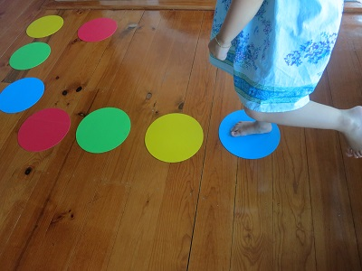
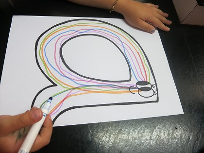

Children readily absorb information in the early years of their lives.
Little Head Starters is a structured, fun, weekly program providing the opportunity for young children to be exposed to literacy and numeracy skills before they attend school
Learning is play-based through songs, games and activities.
This parent/child interactive program for 2-6 year olds focuses on:
Parent participation ensures that every child receives one-on-one attention whilst attending the session and can take home ideas and skills to continue learning at home. It is extremely rewarding to be actively involved in your child's development.
|
 |
 |
10am Fridays at Kerrie Neighbourhood House at Kincumber Drive, Glen Waverley
Call 0449 112 636 to register your FREE TRIAL SESSION